I am a student in the Department of Mechanical and Aerospace Engineering
at Cornell University. I am interested in robotics. This webpage contains all of the lab
reports for MAE 5190 Fast Robots.
Lab 1: The Artemis Board and Bluetooth
Part 1
The objective of Lab 1 was to test the connection between the Artemis board and the computer.
Arduino IDE was installed and a number of tasks were completed to show the functionality of
the Artemis board.
Prelab
During the prelab for Part 1 of the lab Arduino IDE 2.2.1 was installed onto my computer.
The instructions for
Arduino Installation
were followed to ensure proper connection between the Artemis board and the computer.
The SparkFun Apollo3 Boards package was installed using the Boards Manager in Arduino
IDE. This board package was used to run the tasks for Part 1 of Lab 1. Below is a
picture confirming that the SparkFun Apollo Board Manager was installed.
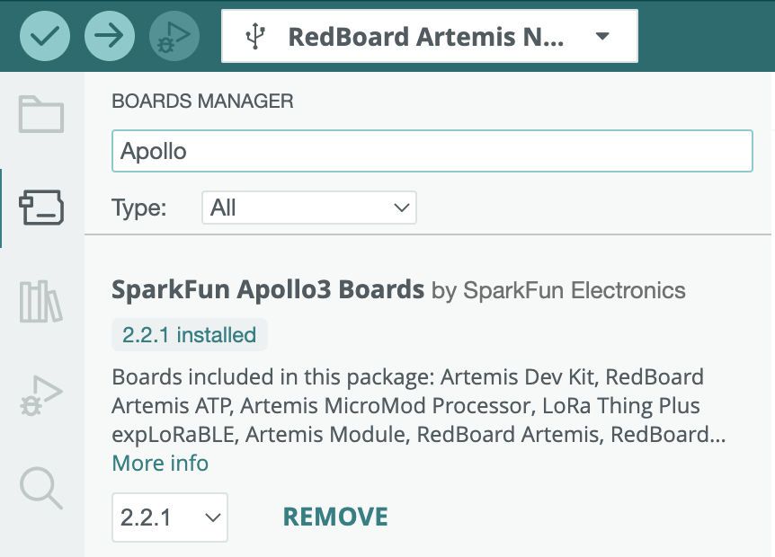
The first task involved a blinking LED on the Artemis board. A prewritten example code
was found under File->Examples->01.Basics->Blink. In the example code, a loop was
implemented and used the function digitalWrite() to turn on the LED for one second
and then turn off the LED for one second.
Below is a video showing the LED blinking on the Artemis board.
Task 3: Example04_Serial
In this example serial communication between the Artemis board and the computer were tested.
The prewritten example code found under File->Examples->Apollo3->Example04_Serial was uploaded
to the Artemis board. Below is a video showing the code being uploaded to the board and the
example outputs entered into the serial window.
Below is an image of the Serial Monitor showing the outputs: "Hello", "This is the serial example",
"Test 1", "Test 2", and "Test 3".
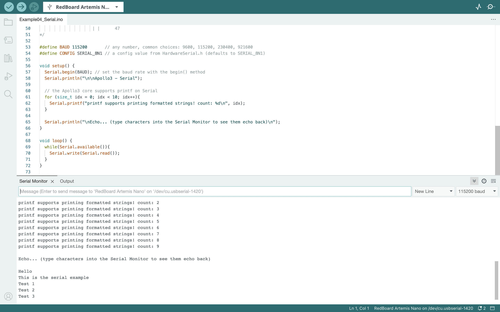
Below is a video showing the example being uploaded and tested.
Task 4: Example02_AnalogRead
The temperature sensor of the Artemis board was tested using the prewritten code found under
File->Examples->Apollo3->Example02_AnalogRead. I covered the sensor with my hand to increase
the temperature reading. At the beginning of the test the temperature is around 32.3 degrees
Celsius and reaches a temperature of around 33.4 degrees Celsius after being covered by my hand.
Below is a video showing the example being uploaded and the temperature reading output.
Task 5: Example01_MicrophoneOutput
The Microphone Output task tests the microphone of the Artemis board. During this task I spoke
into the microphone to change the frequency. The picture below shows some of the Serial Monitor
outputs.
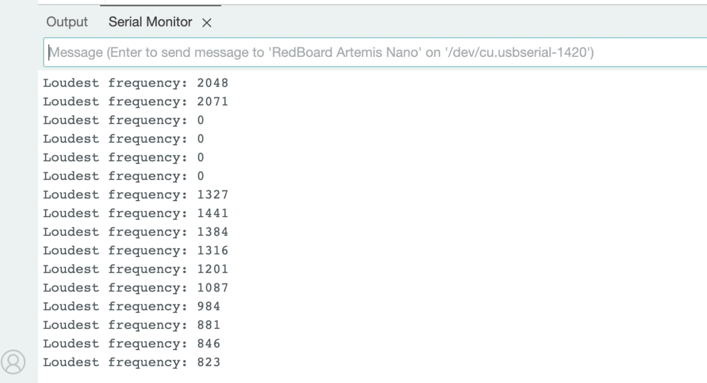
The video below shows the code being uploaded and then the output of the loudest frequency in
Arduino IDE.
5000 Level Task 1: LED and Musical A4
The 5000 level task was to program the Artemis board to turn on the LED when the musical
note A is played on a speaker. When the note A4 is not being played the LED is turned
off. Below is the Arduino sketch that was used for this example. When writing the sketch
I started with the Example01_MicrophoneOutput sketch from the previous task. I added if
statements after the loudest frequency is printed. A musical note A4 is 440Hz
(UC Berkeley Reference).
The first if statement determines if the frequency is between 430Hz and 450Hz to account
for any slight error in sound quality. If the frequency is within range an “A4” statement
will be displayed in the Serial Monitor and the LED on the Artemis board will turn on.
The second if statement determines if the frequency is lower than 430Hz or greater than
450Hz. If the frequency is lower than 430Hz or greater than 450Hz a “Not A4” statement
will be displayed in the Serial Monitor and the LED on the Artemis board will turn off.
Below is an image of the altered lines in the sketch. I added the if statements in lines
113 to 122.
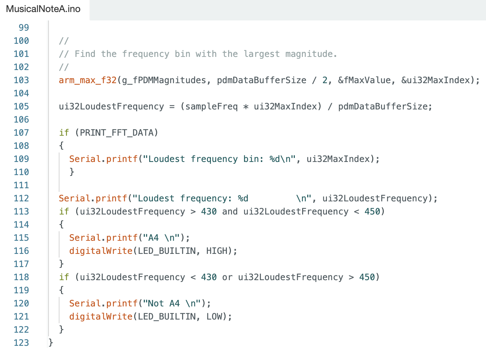
Below is an image of the outputs in the serial monitor for bothe "Not A4" frequencies
and "A4" frequencies.
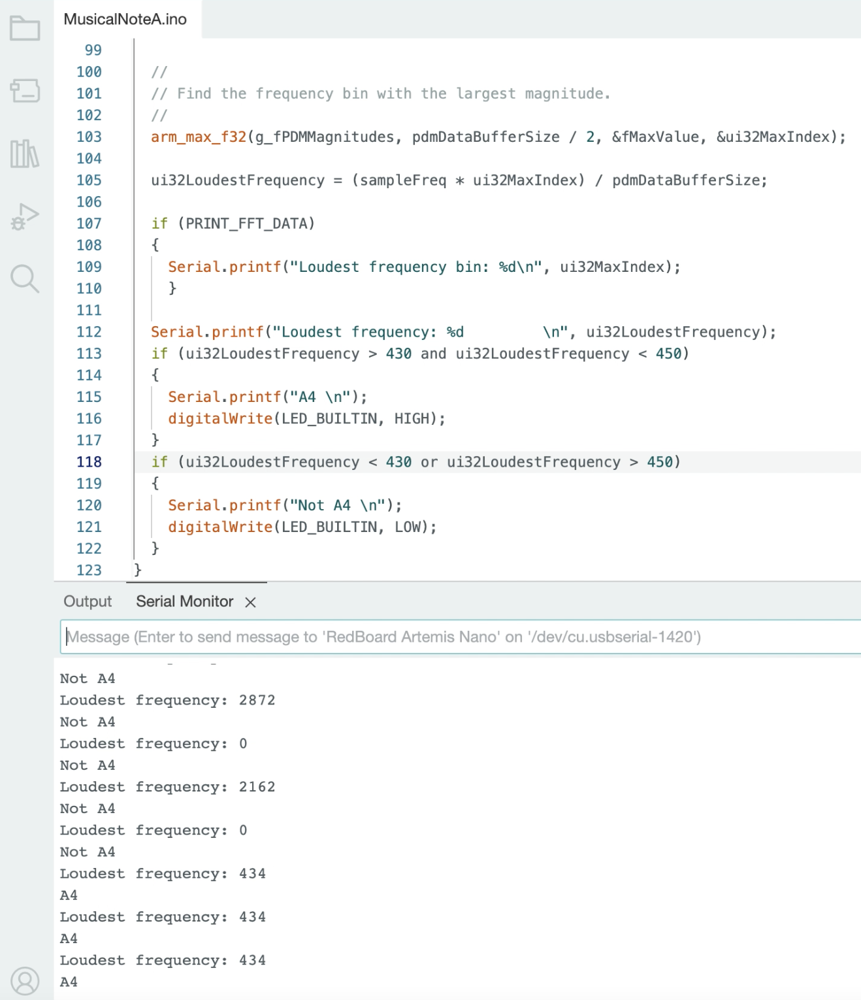
Here is a video showing the LED turning on and off when the note A4 is played.
Musical Tuner
I added to the LED and Musical A4 task by creating a musical tuner. The LED on the Artemis
turns on when the musical note A4 is played and is off when A4 is not played. There are
eleven total if statements that determine the note being played:
A4 : 440Hz (range between 430Hz and 450Hz)
B4 Flat : 466Hz (range between 456Hz and 476Hz)
B4 : 494Hz (range between 484Hz and 504Hz)
C5 : 523Hz (range between 513Hz and 533Hz)
C5 Sharp : 554Hz (range between 544Hz and 564Hz)
D5 : 587Hz (range between 577Hz and 597Hz)
D5 Sharp : 622Hz (range between 612Hz and 632Hz)
E5 : 659Hz (range between 649Hz and 669Hz)
F5 : 698Hz (range between 688Hz and 708Hz)
F5 Sharp : 740Hz (range between 730Hz and 750Hz)
G5 : 784Hz (range between 774Hz and 794Hz)
Below is an image of the additional lines of code. The additional lines of code include
lines 113 to 168.
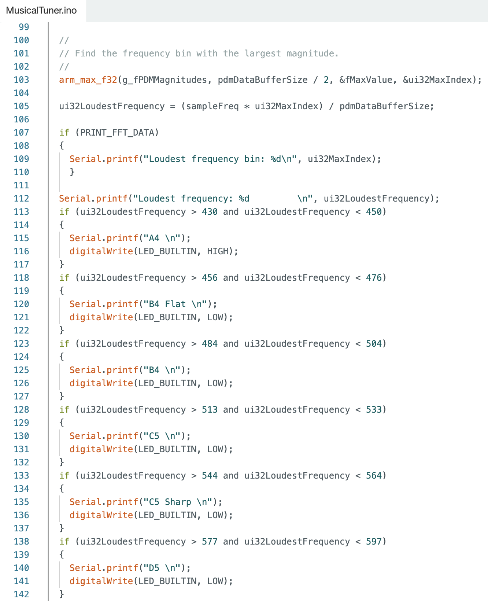
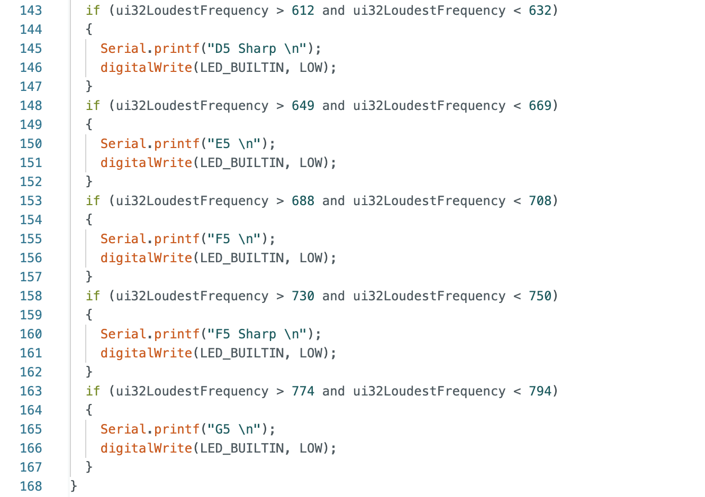
Here is a video of various notes being played and the corresponding outputs in the
Serial Monitor.
The first task of Part 2 was to send an ECHO command of a string value to the Artemis
board and receive an augmented string on the host computer. This task tested the
communication between the Artemis board and the computer. In order to successfully
run this command the line ECHO = 3 needed to be added to the Jupyter Notebook file
cmd_types.py and the statement ECHO needed to be added to the Arduino IDE
ble_arduino.ino file in the section enum CommandTypes.
The image below shows the Arduino IDE code for case ECHO.
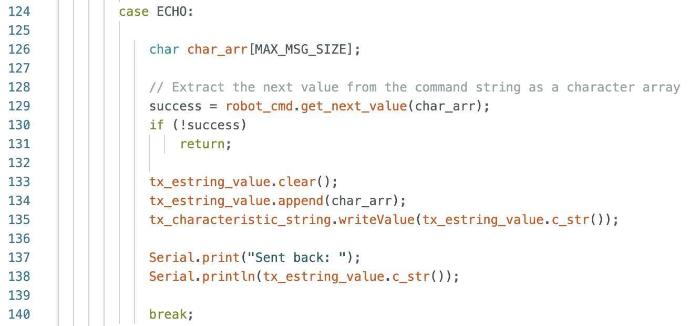
The image below shows the Jupyter Notebook code to send the ECHO command and receive
the augmented string from the Artemis board.
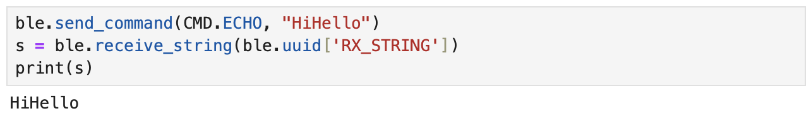
Task 2: GET_TIME_MILLIS
The next task adds another command to the Jupyter Notebook for the Artemis board to
reply with a string of the current time. In order to successfully run this command
the line GET_TIME_MILLIS = 6 needed to be added to the Jupyter Notebook file
cmd_types.py and the statement GET_TIME_MILLIS needed to be added to the Arduino
IDE ble_arduino.ino file in the section enum CommandTypes.
The image below shows the Arduino IDE code for case GET_TIME_MILLIS.
The image below shows the Jupyter Notebook code to send the GET_TIME_MILLIS
command and receive the string with the current time.
Task 3: Notification Handler
A notification handler was created in the Python Jupyter Notebook to receive a
string value from the Artemis board. The GET_TIME_MILLIS command was used to
get the time after starting the notification handler.
The image below is the notification handler and the GET_TIME_MILLIS command in
the Jupyter Notebook.
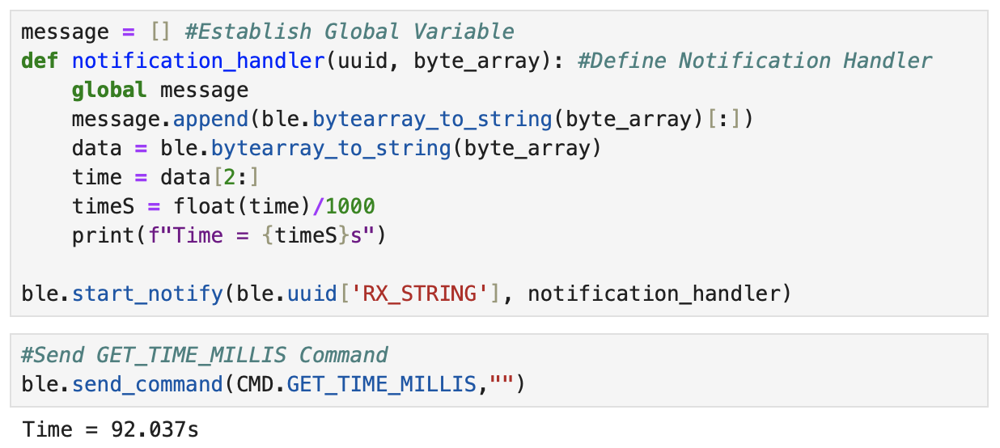
Task 4: Current Time Loop
A loop was implemented to get the current time in milliseconds from the artemis
board and send the information to the computer. The time information is received
and processed by the notification handler. In order to successfully run this command
the line GET_TIME_MILLIS_LOOP = 7 needed to be added to the Jupyter Notebook file
cmd_types.py and the statement GET_TIME_MILLIS_LOOP needed to be added to the Arduino
IDE ble_arduino.ino file in the section enum CommandTypes.
The image below shows the Arduino IDE code for case GET_TIME_MILLIS_LOOP.
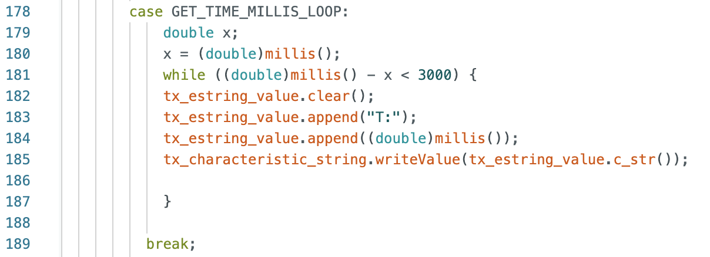
The image below shows the Jupyter Notebook command and some of the time outputs.
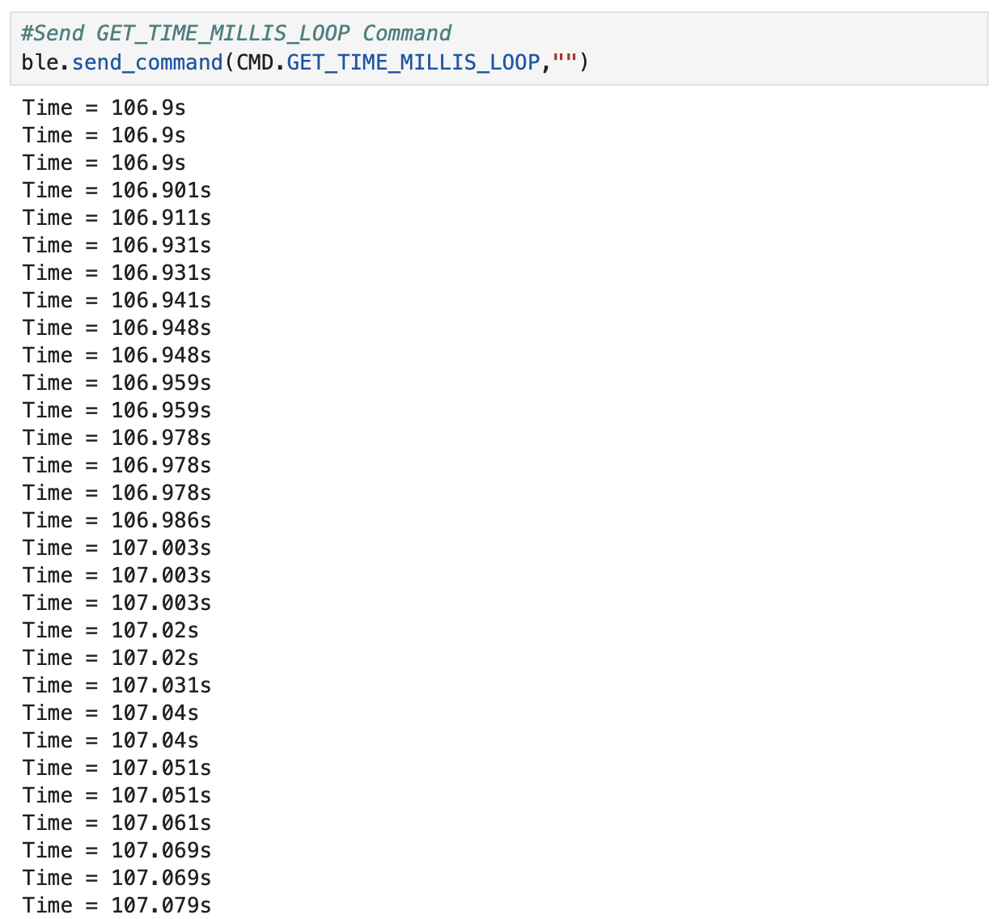
The video shows a scroll log of all of the time outputs.
Task 5: SEND_TIME_DATA
Task 6: GET_TEMP_READINGS
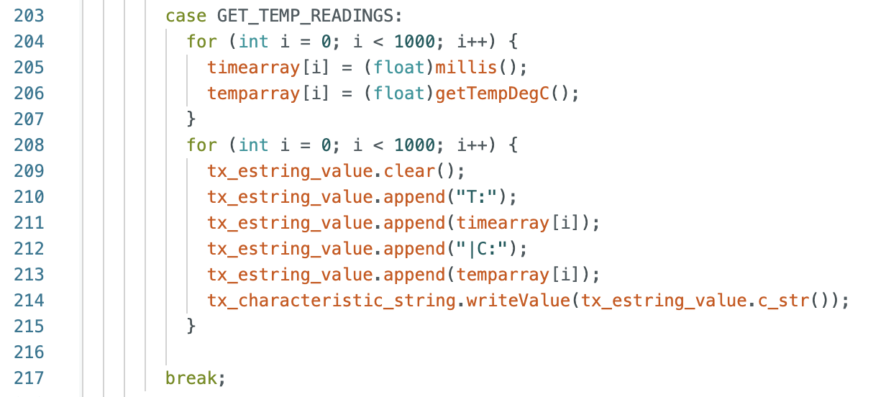
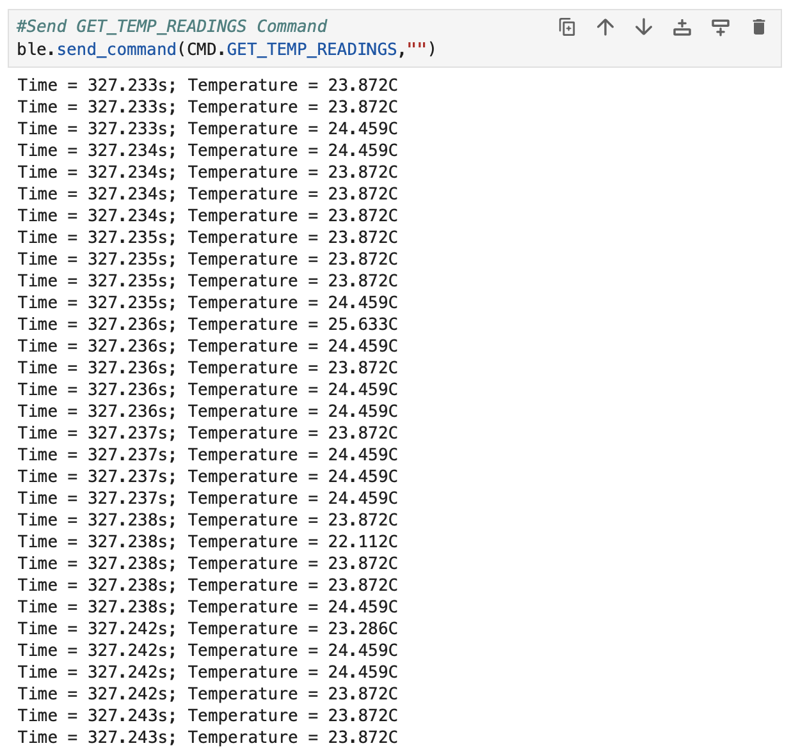
Task 7: Discussion
5000 Level Task 1: Effective Data Rate And Overhead